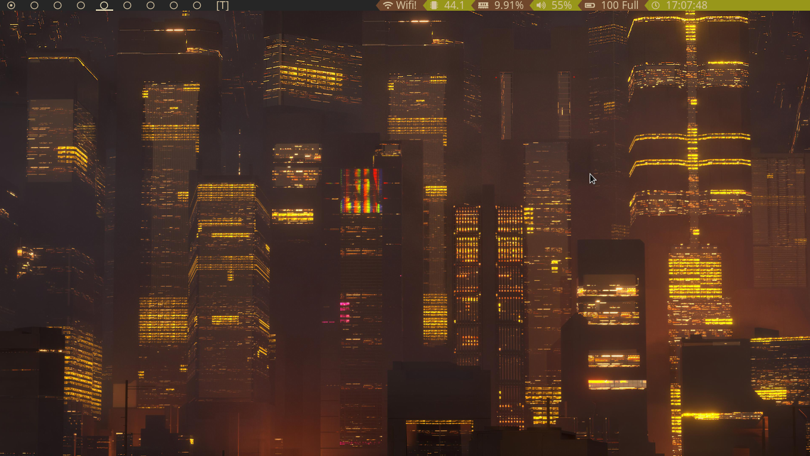
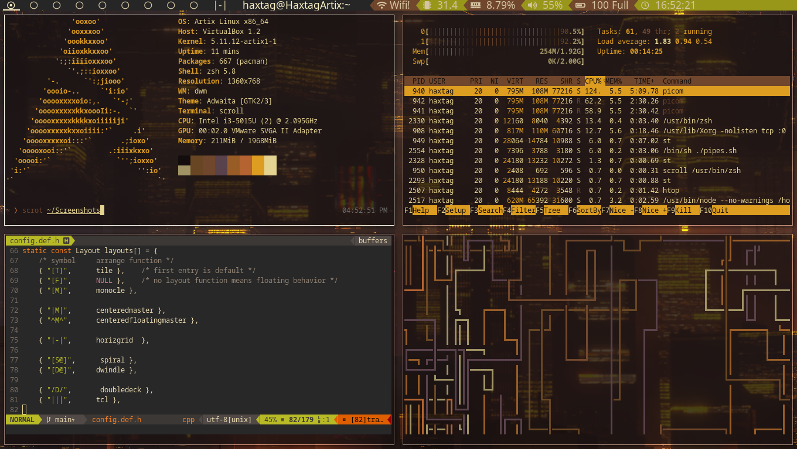
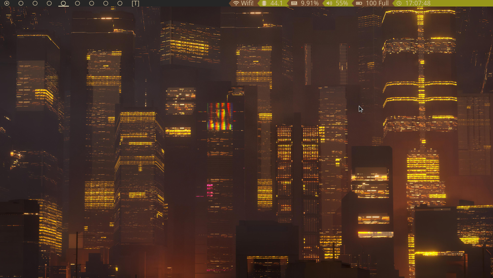

Dmenu

Suckless programs strive to be minimal, open-source and no-bloat.
Check out their website suckless.org
Patches
active-indicator-bar(not using anymore but you can if you wish, just comment out the lines)
underline-tags
bar-height (17px)
barpadding
cyclelayout
pertag
swallow
Alternative tags indicators
restartsig
fullgaps
always-center
statuscolors
rotatestack
centered-master layout
deck layout
tatami layout
three column layout
fibonacci (spiral, dwindle) layout
horizgrid layout
Dmenu
Dmenu is an apllication launcher
Patches
border
center
grid
linehieght
numbers
fuzzymatch
fuzzyhighlight
Slock
Slock is the simple screen locker
Patches
capscolor
message
quickcancel
St
St is the simple terminal. I'm using Luke Smith's build of St.
Which can be found here
Clone this repo on to your local machine
Compile the programs
shell
cd suckless
cd <enter program directory name>
make clean install
Example installation for dwm
shell
cd suckless
cd dwm
make clean install
Colorscheme is gruvbox
Busy

Clean

Dmenu